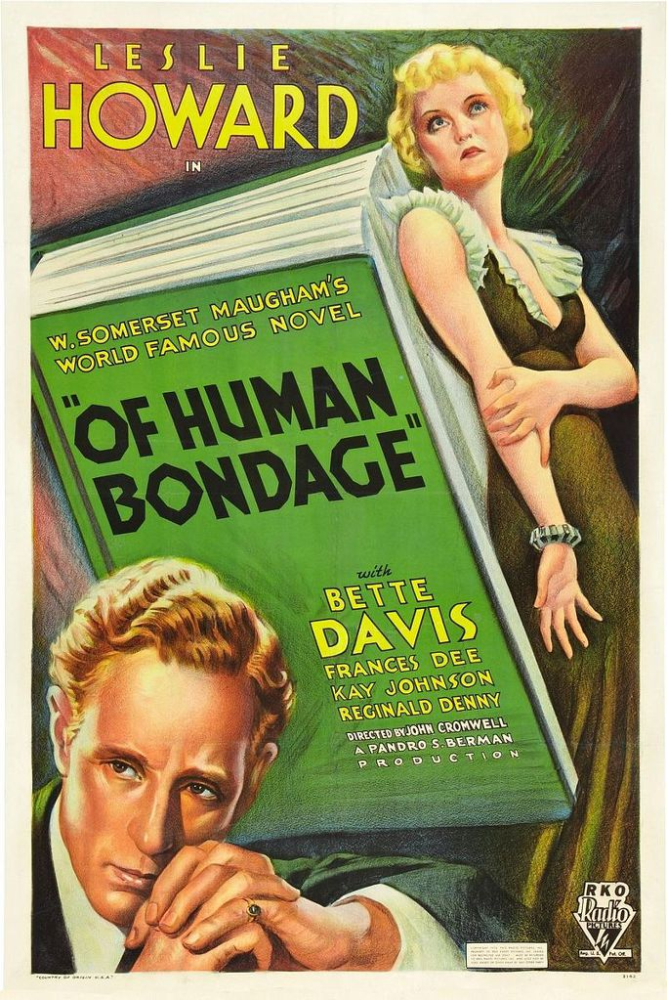
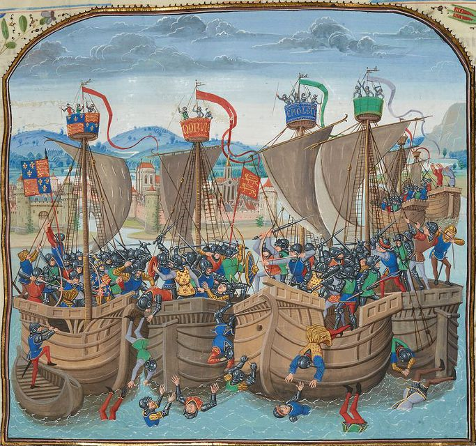
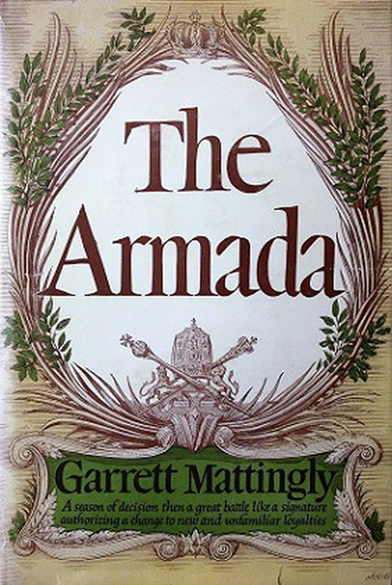
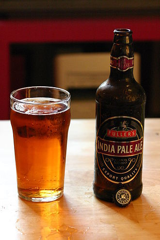
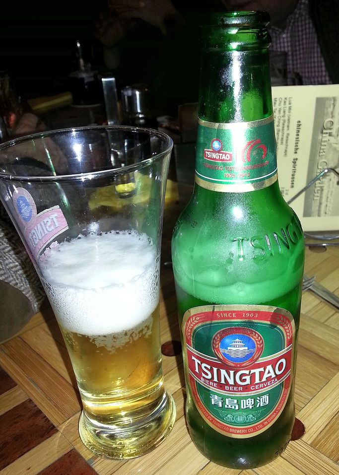
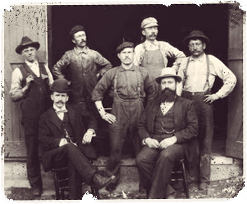
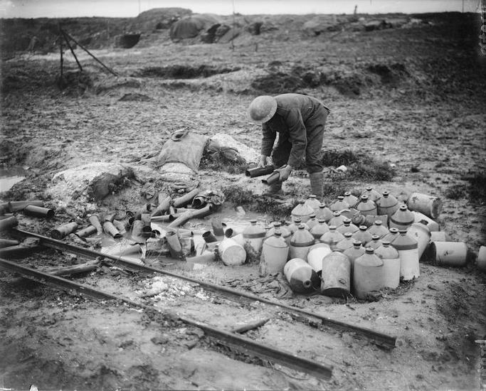
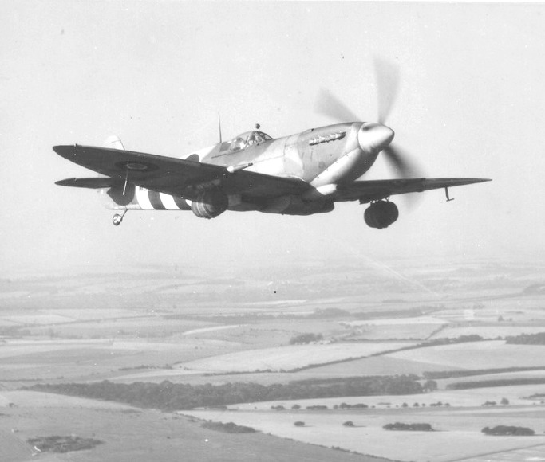
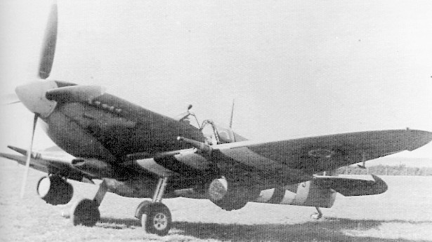
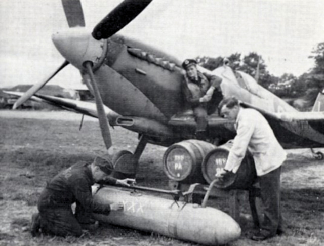

맥주와 전쟁 - 스핏파이어 전투기의 생산적 사용에 대해
게시: 2017-08-12T09:55:31+09:00
맛없는 음식과 전투 본능으로 유명한 영국인들은 사람들이 '예술적 재능이 떨어진다'라고 비웃기는 해도 문화적 강국임에 틀림없습니다. 축구, 골프와 같은 스포츠는 물론이요, 대중음악과 영화 등 비교적 현대적인 문화 트렌드에서 특히 전세계에 막대한 영향을 주고 있으니까요. 또 피쉬앤칩스와 장어파이로 쌓은 악명이 있기는 해도, 홍차와 더불어 펍(pub)의 맥주 문화도 영국의 존재감을 세계에 퍼뜨리고 있습니다.
서머셋 몸의 소설 '인간의 굴레(Of humna bondage)'에서 주인공 필립이 그의 아재 친구 아쎌니의 집을 일요일에 방문한 장면에서 영국 가정 음식 문화의 단편을 보여줍니다. 가족들과 함께 로스트비프(roast beef)와 요크셔푸딩(Yorkshire pudding)으로 오찬(dinner)을 먹고, 남자들끼리 잡담을 나누다가, 오후 늦게 빵과 버터를 곁들인 홍차까지 마시지요. 오찬이 차려지자 아쎌니는 6펜스(현재 가치로 대략 7천원) 짜리 은화를 하나 꺼내 딸에게 주며 맥주를 한주전자 사오도록 하지요. 아쎌니가 이것을 주석 맥주잔(pewter tankard)에 따라 마시면서 이렇게 말하는 장면이 나옵니다.
"단언컨대(My word), 영국 맥주보다 더 좋은 것이 세상에 또 있을까 ?" 그는 말했다. "로스트비프와 라이스푸딩, 왕성한 식욕과 맥주 같은 소박한 즐거움에 대해 신께 감사드리세. 나도 한때는 숙녀와 결혼을 한 적이 있었다네. 세상에나 ! 이 친구야, 절대 숙녀와 결혼하지는 말게나."

('인간의 굴레'는 1934년에 영화로도 만들어졌습니다. '베티 데이비스 아이즈'라는 팝송 제목으로도 유명한 베티 데이비스가 주연했네요.)
우리나라에서는 덴마크나 독일, 벨기에와 프랑스 맥주까지도 잘 알려져 있고 많이 팔립니다만, 영국 맥주에는 뭐가 있는지 잘 모릅니다. 그렇게 우리나라에서는 푸대접을 받고는 있지만, 영국인들은 자국 맥주를 사랑하고 나름 꽤 자부심을 가진 것 같습니다.
이렇게 맥주를 사랑하는 영국인들이 외국 전쟁터에 나가서는 그 나라 술을 마시며 영국 맥주는 잊었을까요 ? 그렇지는 않은 것 같습니다.
영국과 프랑스의 백년전쟁을 중심으로 14세기 네덜란드 및 이베리아 반도를 포함한 유럽사를 기록한 프루와사르(Jean Froissart)라는 분의 연대기에는 당시 스페인에서 싸운 영국군의 이야기가 씌여 있습니다. 이 연대기에 따르면, 영국군이 패배한 이유는 다름아닌 영국 맥주가 없어서였습니다. 영국인들은 몸에 습기를 유지시켜주는 든든하고 돗수가 높은 맥주(good heavy ale)을 마셔야 하는데, 그게 없다보니 단맛 대신 신맛이 나는 포도주(dry sharp wine)를 마셨기 때문에 간과 폐, 그리고 장을 바싹 태워버려 몸이 상했다는 것입니다. 덕분에 많은 영국군이 열병과 이질 설사에 걸려 죽었다는 것이 프루와사르의 설명입니다. 여기서 특히 인상적인 부분은 이런 현상이 하급 병졸들은 물론이고 영주나 기사, 견습기사(barons, knights and squires)까지 다 마찬가지였다는 것입니다. 즉, 영국에서는 기사나 병졸이나 원래는 다 맥주를 즐겨마셨다는 것이지요.

(백년전쟁 중의 슬루이스 해전 모습입니다. 제가 읽었던 프르와사르 연대기 펭귄문고판 표지가 저거였던 것이 기억납니다.)
맥주가 없으면 큰일이 나는 것은 영국 육군 뿐만이 아니었습니다. 1588년 스페인 무적함대의 영국 침공을 그린 책 개럿 매팅리(Garrett Mattingly)의 책 '아르마다'(The Armada)를 보면, 스페인 무적함대를 아일랜드 쪽으로 쫓아 보낸 뒤 영국 항구로 돌아온 영국 함대의 모습은 금의환향하는 영웅들의 모습과는 거리가 상당히 멀었습니다. 아마 스페인 함대와 싸우러 출항할 때는 적의 화승총이나 대포, 심지어 스페인군의 유명한 미늘창에 많은 사상자를 내리라고 비장한 각오로 나갔을텐데, 결국 그런 것에 죽은 선원은 거의 없었음에도 많은 선원들이 이미 죽었거나 죽어가고 있었습니다. 어차피 영불 해협 인근에서 알짱거린 것이 전부였으니 그다지 긴 항해도 아니었는데도, 괴혈병으로 선원들이 픽픽 죽어넘어졌던 것입니다. 심지어 항구로 돌아온 다음에도 급료는 커녕 먹을 것과 마실 것도 제대로 받지 못한 선원들은 계속 죽어나갔다고 합니다. 이 참상의 원인에 대한 영국 함대 지휘부의 결론은 단순명료했습니다. "이 모든 것은 맥주가 없기 때문이다."

스페인으로 원정을 간 영국 기사들이나 영불 해협에서 스페인 함대 뒤를 따라다니던 영국 함대의 선원들이 good heavy ale을 마시지 못한 이유는 간단합니다. 당시 맥주는 살균처리도 못 했고 또 알코올 돗수가 낮아 오래 보존할 수가 없기 때문에, 외국으로 수송하기가 곤란했기 때문이었습니다. 덕분에 나폴레옹 시대 영국 해군에서는 출항 직후에만 맥주를 배급했고, 저장해둔 맥주가 떨어진 이후에는 럼주에 물을 타서 배급했습니다. 럼주나 브랜디는 알코올 돗수가 높아서 절대 상하지 않았으니까요. 물론 브랜디는 와인을 증류하여 만든 비싼 것이었으니 천한 선원들이나 졸병들에게 줄 물건이 아니었고, 사탕수수 찌꺼기로 만든 럼주가 딱 적격이었지요. 나폴레옹 시대때만 해도, 위스키는 아직 영국에서조차 유행을 타기 전이었습니다.
한편, 인도 주둔 영국군의 경우 문제는 더욱 심각했습니다. 선원들의 경우 그래도 몇 개월마다 한번씩 그리운 영국 맥주를 마실 기회가 있었으나, 지구 반대편에 배치된 인도 주둔 영국군은 본토로 귀환하기 전에는 전혀 그럴 기회가 전혀 없었으니까요. 당시의 범선으로는 영국에서 인도까지 4개월 이상 걸렸기 때문에 맥주가 상해버렸던 것이지요. 인도 현지의 화주인 아락(arrack)주나 럼주만 마실 수 있었던 병사들은 가끔씩이라도 맥주를 마시고 싶어 했습니다. 이런 병사들의 사기를 위해서 인도까지의 선박 운송 기간 중 맥주가 상하지 않도록 영국의 몇몇 양조장에서 특별히 좀더 홉을 많이 넣고 알코올 돗수를 높여서 빚은 맥주가 바로 IPA, 즉 India Pale Ale 입니다. 보우(Bow) 양조장에서 처음으로 IPA가 빚어진 것이 1787년인데, 인도 현지에 아예 영국 맥주 공장을 지은 것이 1830년이니 꽤 긴 세월 동안 인도 주둔 영국군은 맥주 부족에 시달렸을 것 같습니다.

원래 맥주하면 독일이지요. 그래서인지 1898년 독일이 청나라의 팔을 비틀어 청도(칭따오)를 99년간 조차하는데 성공하자, 고작 5년 뒤인 1903년에 독일은 철도와 전신 전화 등 식민지 경영에 필수적인 기간 시설과 함께 맥주 공장을 지었습니다. 라오산 지역에서 발견된 맑은 지하수 외에는 홉과 심지어 보리까지 모조리 독일에서 수입하여 만든 이 맥주가 오늘날에도 양꼬치엔 칭따오라는 그 칭따오 맥주입니다. 이 칭따오 맥주는 첫 맥주가 출하된지 2년 만인 1906년 독일 뮌헨에서 열린 세계 박람회에서 금메달을 획득할 정도로 높은 품질을 자랑했습니다. 그러나 독일은 이렇게 건설한 칭따오를 불과 20년도 안되어 제1차 세계대전 패배로 잃게 되는데, 이 지역을 공격한 것은 중국이 아니라 당시 연합국 소속이었던 일본군이었습니다. 당시 칭따오 포위전에서 일본군에게 포위되었던 독일군은 최소한 제대로 된 맥주가 부족하지는 않았을 것입니다.


(아래 사진은 1903년 칭따오 맥주의 건립자들 모습입니다. 사실 칭따오 맥주는 100% 독일계는 아니고, 영국과 독일의 합작 회사였습니다.)
영국인들의 맥주 사랑은 제1차 세계대전이라는 미증유의 위기에서 큰 타격을 입습니다. 모든 것이 부족한 총동원 상태의 전시에도 맥주를 빚어 마신다는 것이 말이 되느냐라는 여론이 많았거든요. 가령 1916년 영국 수상이 된 데이빗 로이드 조지(David Lloyd George)는 '독일 잠수함보다 영국인들이 음주가 군수 체제에 끼치는 폐해가 더 크다'라고 공격했고, 결국 영국 전통 맥주집인 펍(pub)의 영업 시간을 단축시키고 양조장을 폐쇄하는 등 맥주 탄압 정책을 펼쳤습니다. 무엇보다, 맥주에 엄청난 세금을 부과해서 가격을 2배로 올려버렸지요. 그 결과, 1917년 맥주 생산량은 19만 배럴로서, 전쟁 발발 직전의 절반 수준으로 떨어져 버렸습니다. 그리고, 병사들의 보급품에서 맥주가 빠진 것은 물론이고, 심지어 영국 육해군의 피라고도 할 수 있는 럼주까지 크게 줄어들었습니다. 럼주는 참호전의 추위와 습기에 노출된 병사들의 사기를 위해 조금씩이라도 배급되었으나, 식량과 탄약을 수송하기도 힘든 마당에 부피와 무게가 상당한 맥주를 실어나르는 것은 정말 문제가 되었을 것입니다. 그래도 가끔씩은 럼주 대신 맥주가 배급되기도 했던 모양입니다. 아래 배식량은 모두 전쟁 초기 서류상으로만 존재하던 것이고, 실제 배급된 것과는 거리가 매~우 멀었습니다. 아무튼 그런 와중에도 프랑스군은 와인을 병사들에게 꾸준히 배급했고, 이를 본 영국군은 '왜 우리에겐 럼이나 맥주를 주지 않는가?'라며 투덜댔다고 합니다. 영국군에게도 현지에서 쉽게 구할 수 있는 프랑스산 와인이 배급되기는 했으나, 대개 품질이 좋지 않은 백포도주였고, 이를 영국군은 vin blong (프랑스어로 백포도주인 vin blanc에서 나온 말인데, 실제 blanc의 프랑스어 발음도 불랑이 아니라 블롱에 가깝습니다)이라고 부르며 투덜거렸습니다. 일부 프랑스산 라거(lager) 맥주가 배급되기도 했지만, 영국산 포터나 에일 맥주에 비해 약하고 밋밋한 프랑스 라거 맥주는 영국 병사들에게 별로 인기가 없었다고 합니다.
영국군 1914년 1일 배식량 :
신선육/냉동육 1.25 파운드 또는 보존육/염장육 1 파운드
빵 1.25 파운드 또는 건빵/밀가루 1 파운드
베이컨 4 온스
치즈 3 온스
홍차 0.625 온스
잼 4 온스
설탕 3 온스
소금 0.5 온스
후추 0.028 온스
겨자 0.05 온스
신선채소 8 온스 혹은 건조채소 2 온스 혹은 라임주스 0.1 온스
(지휘 장성의 재량에 따라) 럼주 0.06 리터 또는 포터맥주(porter) 0.57 리터
담배 0.29 온스
독일군 1914년 1일 배식량 :
빵 1.66 파운드 또는 건빵 1.09 파운드 또는 계란비스킷 0.88 파운드
신선육 또는 냉동육 0.81 파운드 또는 보존육 0.44 파운드
감자 53 온스(3.3 파운드) 또는 신선채소 4.5~9 온스 또는 건조채소 2 온스 혹은 감자와 건조채소 혼합물 21 온스
커피 0.9 온스 또는 홍차 0.1 온스
설탕 0.7 온스
소금 0.9 온스
시가 또는 담배 2 개피 또는 파이프 담배 1 온스 또는 코담배 0.2 온스
(지휘 장성의 재량에 따라) 증류주 0.097 리터 또는 와인 0.25 리터 또는 맥주 0.5 리터

(이 사진은 영국군의 포탄과 럼주병을 정리하는 모습입니다. 당시 럼주는 저런 커다란 도자기 병에 넣어서 공급되었습니다. 저 도자기 병의 바닥에는 보급창(Supply Reserve Depot)을 뜻하는 S.R.D가 찍혀 있었으나, 병사들은 이를 '군납 럼에 물을 탔네'(Service Rum Diluted) 또는 '목적지에 도착하는 일은 거의 없네'(Seldom Reaches Destination)라고 부르며 조롱했습니다.)
제1차 세계대전 때 술이 병사들의 사기에 지대한 영향을 주었다는 것이 반영되었는지, 제2차 세계대전 때는 영국 병참부는 맥주에 대해서 다소 완화된 입장이었습니다. 가령 1940년에 식량부 장관이던 울스턴 경(Lord Woolston)은 정부 각료들의 의견을 종합하여 '맥주 한 잔은 누구에게도 해롭지 않다'라고 선언하기에 이르렀지요. 그리고 영국의 맥주 양조장은 '소중한 식량을 낭비하는 퇴폐 업종'이라는 오명 대신 '전선에서 싸우는 병사의 사기 진작을 위해 소중한 맥주 생산에 힘쓰는 산업 전사'라는 포지션을 가질 수 있었습니다. 1942년에는 '군부대를 위한 맥주'(beer for troops)라는 위원회까지 결성되어, '병사들의 식사에 맥주를 공급하는 것은 국가적 의무'라는 구호까지 외쳤습니다. 하지만 특히 대전 초기에는 독일 U보트의 기세가 등등했으므로 해외의 영국군에게 맥주를 보내는 것은 무척 어려운 일이었습니다. 병력과 탄약, 식량과 의약품을 보내는 것도 힘들었으니까요. 그럼에도 불구하고 롬멜 장군에게 함락 직전이던 북아프리카 토브룩(Tobruk)에는 병사들을 위로하기 위해 500 상자의 맥주를 보냈고, 이것이 무사히 하역되자 당시 병사들이 뛸 듯이 기뻐했고 그 뒤로로 이 날을 꽤 오래 기념하기도 했습니다.
제2차 세계대전 중 영국 맥주업체들의 근성을 단적으로 보여주는 것이 아래 사진입니다. 이건 합성이 아니라 실제로 있었던 일인데, 1944년 노르망디 상륙작전 이후 프랑스 내에 활주로를 확보하자, 영국 맥주업체들이 전선의 병사들을 위문하고자 본토에서 프랑스로 날아가는 스핏파이어(Spitfire Mk IX) 전투기 날개 밑에 맥주통을 매달아 보낸 것입니다. 2천 피트 상공을 고속으로 날아 배달된 맥주통은 딱 알맞은 온도로 냉각되어 이를 받은 병사들을 정말 기쁘게 했다고 합니다.


그러나 스핏파이어 전투기의 이런 생산적인 활동은 그다지 오래 가지 못했습니다. 곧 영국 관세청(Customs and Excise)이 이 사실을 알아냈고, 세금 납부 없이 맥주를 반출하는 것은 위법이라며 금지했기 때문이었습니다. 그러나 이후로도 본토를 오가는 공군기들은 조종석 남는 공간이나 사물함 등에 맥주병을 몰래 가져와 나눠 마셨고, 심지어 외부 연료 탱크(drop tank)에 맥주를 실어 왔습니다. 그렇게 맥주를 실은 연료통을 달고 오는 전투기가 착륙할 때면 전체 공군 기지의 병사들이 다 몰려나와 그 착륙을 노심초사하며 구경했고, 조종사가 미숙하여 거칠게 착륙하는 경우 야유를 보냈다고 합니다. 영국군의 지상 공격기인 타이푼(Typhoon) 조종사였던 데즈먼드 스캇(Desmond Scott)이라는 양반의 회고록에 따르면, 그렇게 연료 탱크에 채워온 맥주에서는 쇠맛이 나서 사실 그다지 좋지는 않았다고 합니다.

Source : 서머셋 모옴 '인간의 굴레'
개럿 매팅리 '아르마다'
프루와사르 '연대기'
http://www.urbanghostsmedia.com/2014/08/beer-keg-carrying-spitfires-world-war-two/
http://allaboutbeer.com/article/beer-goes-to-war/
https://archive.org/stream/chroniclesoffroi00froi/chroniclesoffroi00froi_djvu.txt
https://warontherocks.com/2015/06/a-farewell-to-sobriety-part-two-drinking-during-world-war-ii/
https://en.wikipedia.org/wiki/Tsingtao_Brewery
https://en.wikipedia.org/wiki/India_pale_ale
https://yesterdaysshadow.wordpress.com/qingdao-germanys-chinese-colony/
https://en.wikipedia.org/wiki/Beer_in_India
http://net.lib.byu.edu/estu/wwi/memoir/ration.html
https://pointsadhsblog.wordpress.com/2014/05/29/world-war-i-part-2-the-british-rum-ration/
https://www.diffordsguide.com/encyclopedia/475/bws/booze-in-wwi
http://ww2talk.com/index.php?threads/unorthodox-use-of-spitfire-in-normandy-beer.37477/